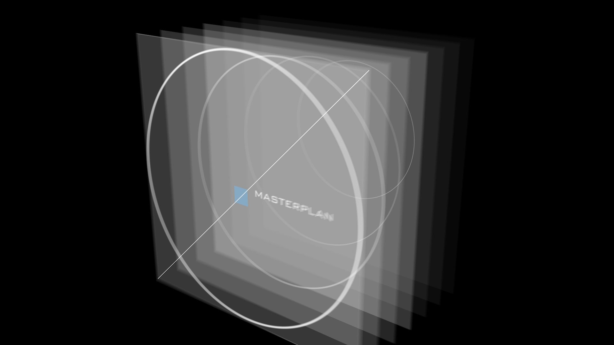
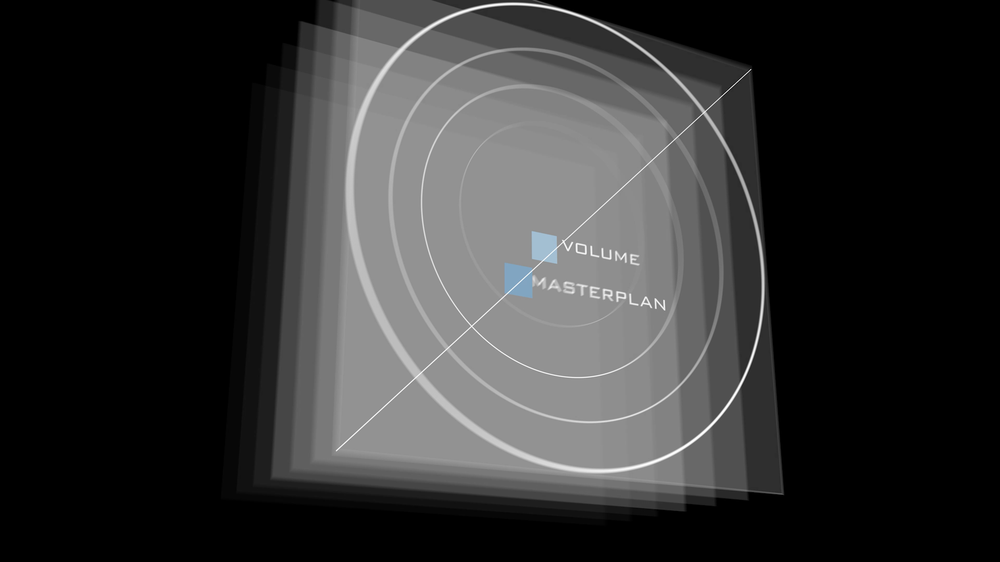
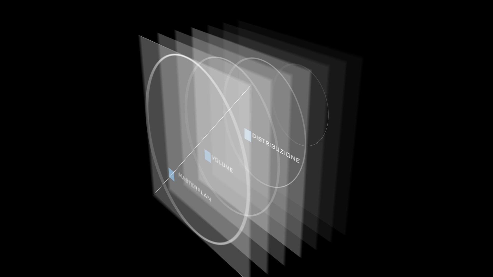
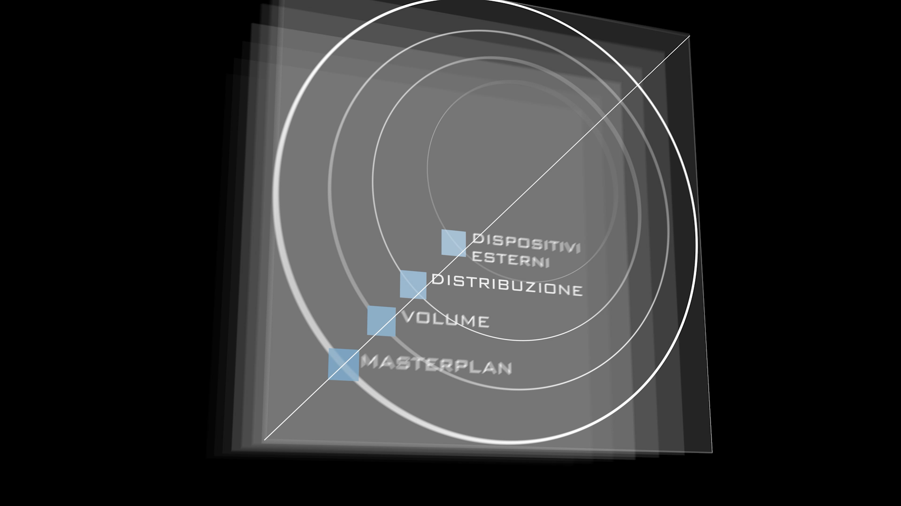

MASTERPLAN

VOLUME

DISTRIBUZIONE

DISPOSITIVI ESTERNI

IT
I quattro algoritmi ci sono stati utili per gestire e mettere a sistema la complessità...
EN
The four algorithms were useful for managing and organizing complexity...